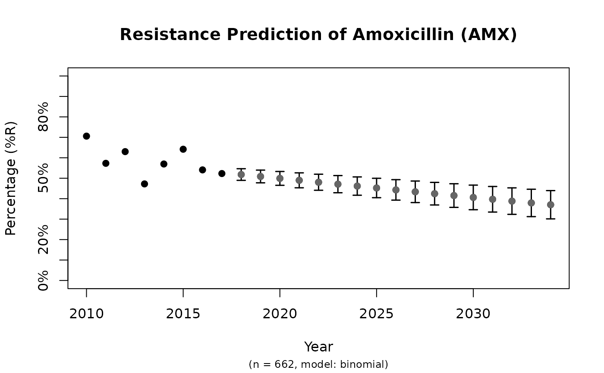
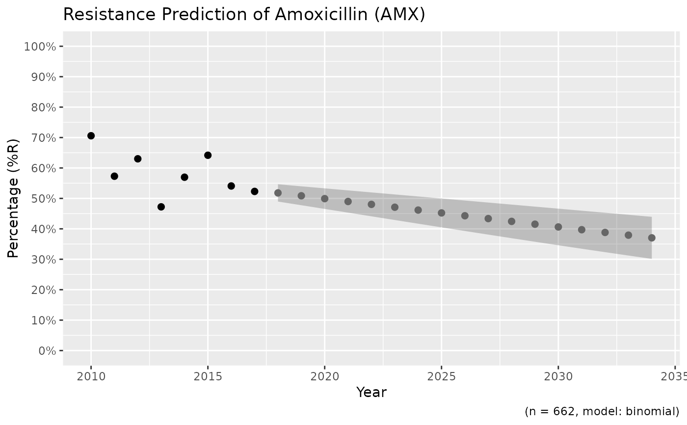
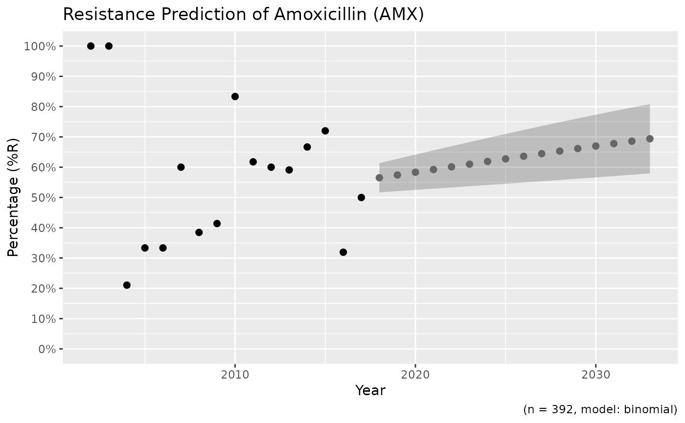

Create a prediction model to predict antimicrobial resistance for the next years on statistical solid ground. Standard errors (SE) will be returned as columns se_min and se_max. See Examples for a real live example.
Usage
resistance_predict(
x,
col_ab,
col_date = NULL,
year_min = NULL,
year_max = NULL,
year_every = 1,
minimum = 30,
model = NULL,
I_as_S = TRUE,
preserve_measurements = TRUE,
info = interactive(),
...
)
rsi_predict(
x,
col_ab,
col_date = NULL,
year_min = NULL,
year_max = NULL,
year_every = 1,
minimum = 30,
model = NULL,
I_as_S = TRUE,
preserve_measurements = TRUE,
info = interactive(),
...
)
# S3 method for resistance_predict
plot(x, main = paste("Resistance Prediction of", x_name), ...)
ggplot_rsi_predict(
x,
main = paste("Resistance Prediction of", x_name),
ribbon = TRUE,
...
)
# S3 method for resistance_predict
autoplot(
object,
main = paste("Resistance Prediction of", x_name),
ribbon = TRUE,
...
)Arguments
- x
a data.frame containing isolates. Can be left blank for automatic determination, see Examples.
- col_ab
column name of
xcontaining antimicrobial interpretations ("R","I"and"S")- col_date
column name of the date, will be used to calculate years if this column doesn't consist of years already, defaults to the first column of with a date class
- year_min
lowest year to use in the prediction model, dafaults to the lowest year in
col_date- year_max
highest year to use in the prediction model, defaults to 10 years after today
- year_every
unit of sequence between lowest year found in the data and
year_max- minimum
minimal amount of available isolates per year to include. Years containing less observations will be estimated by the model.
- model
the statistical model of choice. This could be a generalised linear regression model with binomial distribution (i.e. using
glm(..., family = binomial), assuming that a period of zero resistance was followed by a period of increasing resistance leading slowly to more and more resistance. See Details for all valid options.- I_as_S
a logical to indicate whether values
"I"should be treated as"S"(will otherwise be treated as"R"). The default,TRUE, follows the redefinition by EUCAST about the interpretation of I (increased exposure) in 2019, see section Interpretation of S, I and R below.- preserve_measurements
a logical to indicate whether predictions of years that are actually available in the data should be overwritten by the original data. The standard errors of those years will be
NA.- info
a logical to indicate whether textual analysis should be printed with the name and
summary()of the statistical model.- ...
arguments passed on to functions
- main
title of the plot
- ribbon
a logical to indicate whether a ribbon should be shown (default) or error bars
- object
model data to be plotted
Value
A data.frame with extra class resistance_predict with columns:
yearvalue, the same asestimatedwhenpreserve_measurements = FALSE, and a combination ofobservedandestimatedotherwisese_min, the lower bound of the standard error with a minimum of0(so the standard error will never go below 0%)se_maxthe upper bound of the standard error with a maximum of1(so the standard error will never go above 100%)observations, the total number of available observations in that year, i.e. \(S + I + R\)observed, the original observed resistant percentagesestimated, the estimated resistant percentages, calculated by the model
Furthermore, the model itself is available as an attribute: attributes(x)$model, see Examples.
Details
Valid options for the statistical model (argument model) are:
"binomial"or"binom"or"logit": a generalised linear regression model with binomial distribution"loglin"or"poisson": a generalised log-linear regression model with poisson distribution"lin"or"linear": a linear regression model
Interpretation of R and S/I
In 2019, the European Committee on Antimicrobial Susceptibility Testing (EUCAST) has decided to change the definitions of susceptibility testing categories R and S/I as shown below (https://www.eucast.org/newsiandr/).
R = Resistant
A microorganism is categorised as Resistant when there is a high likelihood of therapeutic failure even when there is increased exposure. Exposure is a function of how the mode of administration, dose, dosing interval, infusion time, as well as distribution and excretion of the antimicrobial agent will influence the infecting organism at the site of infection.S = Susceptible
A microorganism is categorised as Susceptible, standard dosing regimen, when there is a high likelihood of therapeutic success using a standard dosing regimen of the agent.I = Susceptible, Increased exposure
A microorganism is categorised as Susceptible, Increased exposure when there is a high likelihood of therapeutic success because exposure to the agent is increased by adjusting the dosing regimen or by its concentration at the site of infection.
This AMR package honours this (new) insight. Use susceptibility() (equal to proportion_SI()) to determine antimicrobial susceptibility and count_susceptible() (equal to count_SI()) to count susceptible isolates.
See also
The proportion() functions to calculate resistance
Examples
x <- resistance_predict(example_isolates,
col_ab = "AMX",
year_min = 2010,
model = "binomial"
)
#> ℹ Using column 'date' as input for `col_date`.
plot(x)

# \donttest{
if (require("ggplot2")) {
ggplot_rsi_predict(x)
}

# using dplyr:
if (require("dplyr")) {
x <- example_isolates %>%
filter_first_isolate() %>%
filter(mo_genus(mo) == "Staphylococcus") %>%
resistance_predict("PEN", model = "binomial")
print(plot(x))
# get the model from the object
mymodel <- attributes(x)$model
summary(mymodel)
}
#> Including isolates from ICU.
#> ℹ Using column 'date' as input for `col_date`.
#> NULL
#>
#> Call:
#> glm(formula = df_matrix ~ year, family = binomial)
#>
#> Deviance Residuals:
#> Min 1Q Median 3Q Max
#> -1.4150 -0.1855 0.0000 0.4096 0.9277
#>
#> Coefficients:
#> Estimate Std. Error z value Pr(>|z|)
#> (Intercept) 47.02915 72.98739 0.644 0.519
#> year -0.02280 0.03637 -0.627 0.531
#>
#> (Dispersion parameter for binomial family taken to be 1)
#>
#> Null deviance: 5.9620 on 11 degrees of freedom
#> Residual deviance: 5.5701 on 10 degrees of freedom
#> AIC: 50.533
#>
#> Number of Fisher Scoring iterations: 4
#>
# create nice plots with ggplot2 yourself
if (require("dplyr") && require("ggplot2")) {
data <- example_isolates %>%
filter(mo == as.mo("E. coli")) %>%
resistance_predict(
col_ab = "AMX",
col_date = "date",
model = "binomial",
info = FALSE,
minimum = 15
)
head(data)
autoplot(data)
}

# }